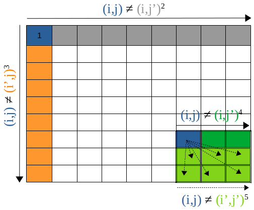

Sudoku SAT Solver
This project encodes N×N Sudoku constraints into SAT formulas and solves them efficiently. The solver supports 4x4, 9x9, and 16x16 grids by systematically encoding each cell and constraint into CNF form.
Encoding to SAT
Each cell (i,j) contains a value k (1 ≤ i,j,k ≤ N). Constraints applied:
- Each cell must have a number between 1 and N.
- Each row and column contains distinct numbers.
- Each n×n square contains distinct numbers.
Algorithm Steps
- Assign a candidate value to each cell.
- Check column and row constraints for uniqueness.
- Check n×n square constraints.
- Propagate constraints recursively to solve the Sudoku.
- Adjust encoding for 16x16 Sudoku by using two-digit numbers.
Program Features

The solver works efficiently for standard 9x9 Sudokus, smaller 4x4 puzzles, and adapts to larger 16x16 grids with consistent CNF representation.